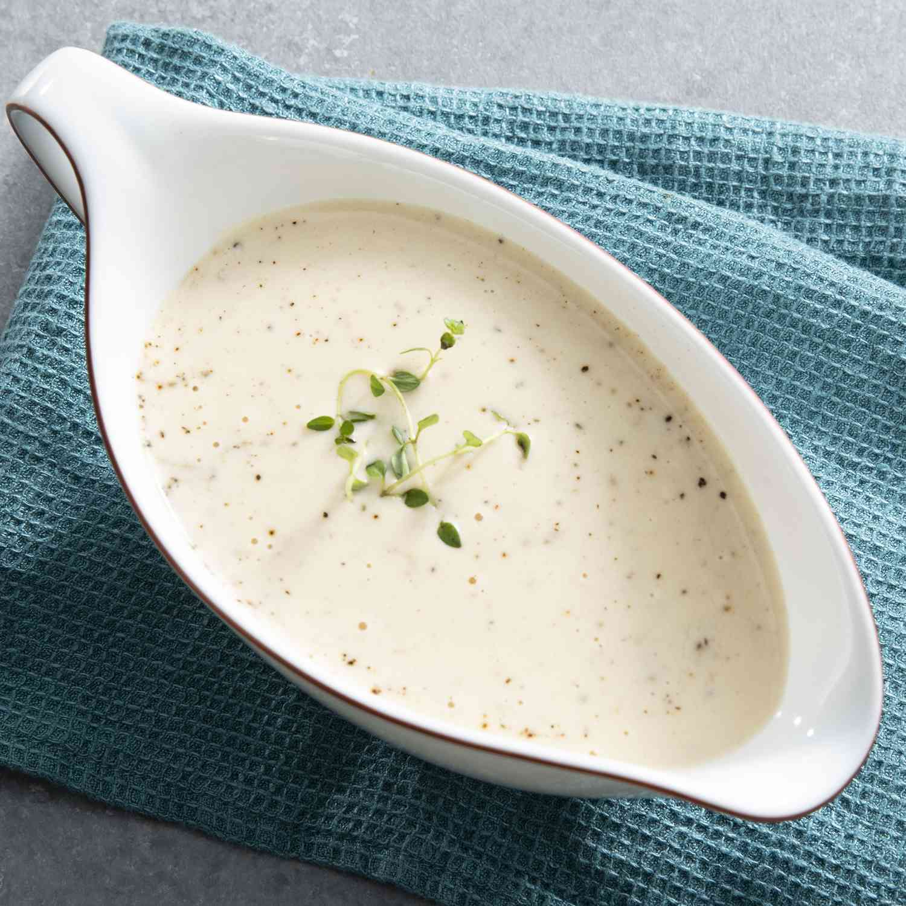

White Sauce

Description
This white sauce recipe can be used as a base for many dishes, such as lasagna and chicken pot pie.
Ingredients
- 2 tablespoons butter
- 2 tablespoons all-purpose flour
- 1 cup milk, or more as needed
Steps
- Melt butter in a small saucepan over medium-low heat. Whisk in flour to form a thick paste; cook and stir until golden
in color, about 5 to 7 minutes.
- Whisk in 1 cup milk; cook and stir until thickened, about 5 minutes more. Add more milk to reach desired consistency.